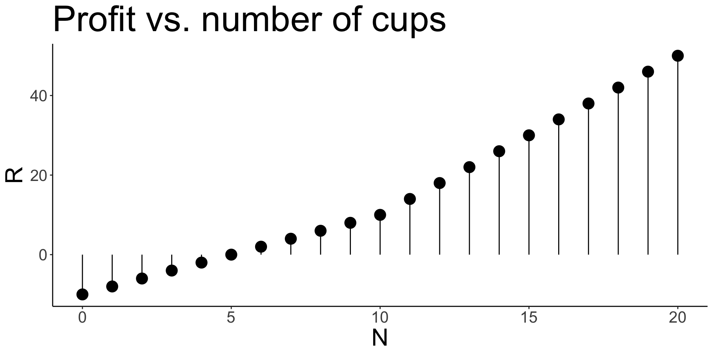
STA237: Probability, Statistics, and Data Analysis I
Michael Jongho Moon
PhD Student, DoSS, University of Toronto
June 1, 2022
Suppose Michael opens a coffee shop and observes that the number of customers per day, \(N\), follows the following Poisson distribution.
\[N\sim\text{Pois} (4)\]
Michael is interested in…
\[E\left(N\right)\]
\[\text{Var}\left(N\right)\]
\[E\left(N\right)\]
\[\text{Var}\left(N\right)\]
In general, \(E(X)=\lambda =\text{Var}(X)\) for \(X\sim \text{Pois}(\lambda)\).
Now suppose Michael’s profit per day, \(R\), is
\[R=g\left(N\right)=\begin{cases}2N - 10 & \text{when } 0\le N < 10 \\ 4N - 30 &\text{when } B\ge 10\end{cases}\]
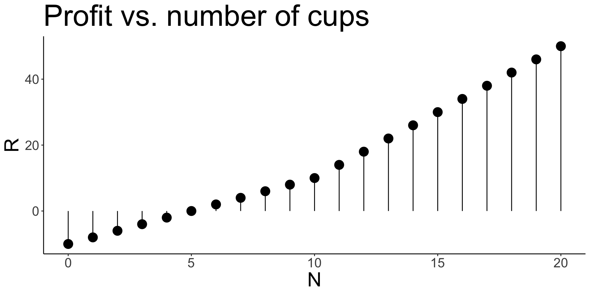
Michael is interested in…
\[E\left(R\right)\]
For the discrete random variable \(N\),
\[E\left[g\left(N\right)\right]=\sum_{n=0}^\infty g\left(n\right)\cdot p\left(n\right)\]
\[E\left(R\right)\]
“But, I made
$20 yesterday!“
\[P(R\ge 20)=?\]
To compute this, we need the probability mass function of \(R\).
Let \(X\) be a discrete random variable with probability mass function \(p_X\) and \(Y=g\left(X\right)\), where \(g:\mathbb{R}\to\mathbb{R}\) is a function Then \(Y\) is also discrete and its probability mass function \(p_Y\) is defined by
\[p_Y(y)=\sum_{x\in g^{-1}\left\{y\right\}} p_X\left(x\right)\]
where \(g^{-1}\left\{y\right\}\) is the set of all values \(X\) that satisfy \(g\left(x\right)=y\).
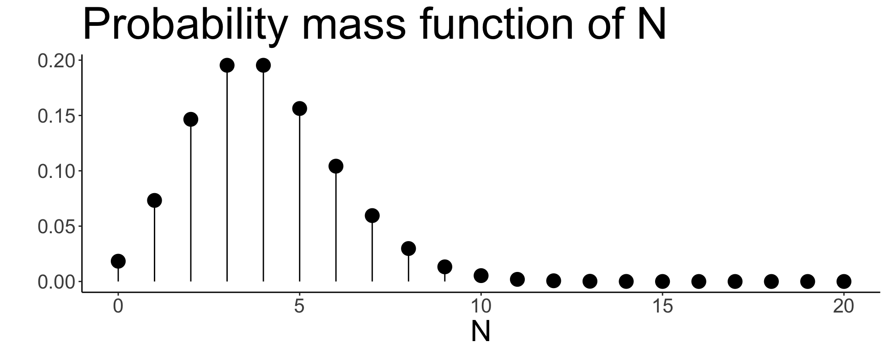
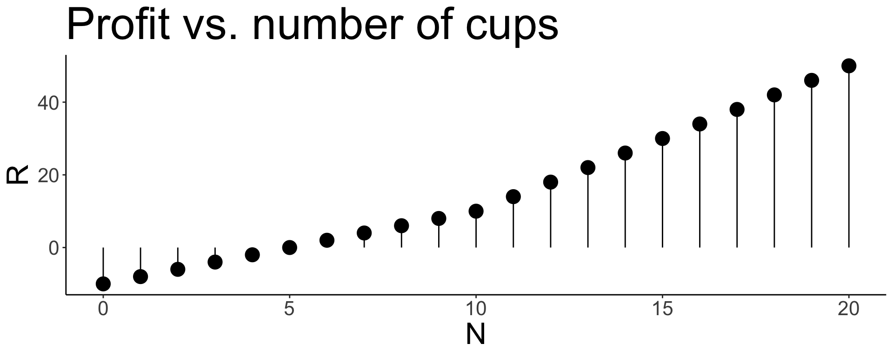
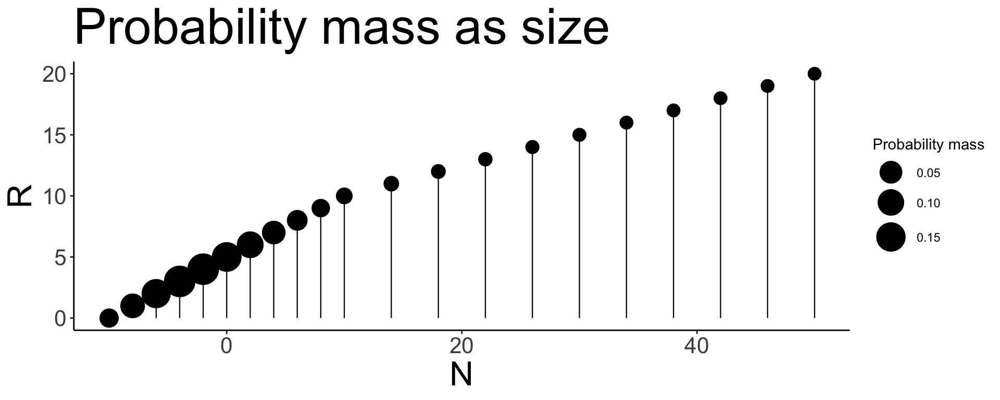
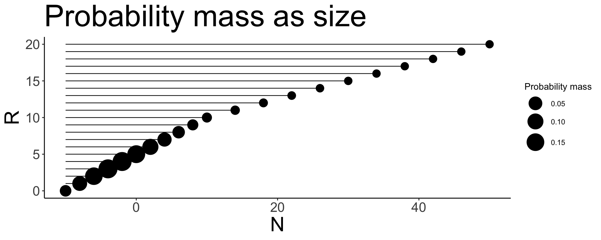
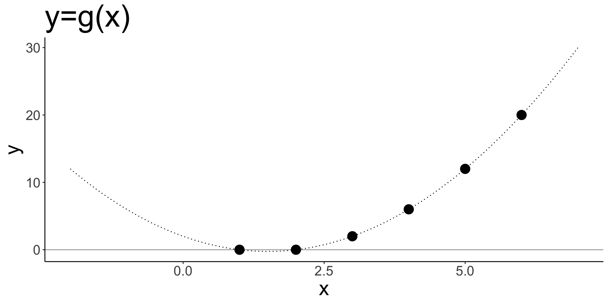
Let \(X\) be the outcome of a fair six-sided die roll and \(Y=X^2-3X+2\). Compute \(P(Y=0)\).
Let \(X\sim \text{U}(0,1)\) and \(Y = g\left(X\right)\), where
\[g(x) = \begin{cases}7 & x\le \frac{3}{4} \\ 5 & x > \frac{3}{4}.\end{cases}\]
Let \(X\sim \text{Exp}\left(1/2\right)\) and \(y=g\left(X\right)=60X\). Determine the distribution of \(Y\).
\[\implies Y\sim \text{Exp}(1/120)\]
\[f_Y(y)=\frac{d}{dy}F_Y(y)=\left.\frac{d}{dy}F_X\left(x\right)\right|_{x=g^{-1}\left(y\right)}=\left.\frac{dx}{dy}\frac{d}{dx}F_X\left(x\right)\right|_{x=g^{-1}\left(y\right)}=\left.\frac{dx}{dy}f_X(x)\right|_{x=g^{-1}\left(y\right)}\]
\[f_Y(y)=\left[\frac{d}{dy}\frac{y}{60}\right]\cdot\frac{1}{2}e^{-(y/60)/2}=\frac{1}{120}e^{-y/120},\quad \text{for }y>0\]
Let \(X\) be a continuous random variable with probability density function \(f_X\) and \(Y=g\left(X\right)\), where \(g:\mathbb{R}\to\mathbb{R}\) is a function that is differentiable, and strictly increasing or strictly decreasing at places for which \(f_X(x)>0\). Then \(Y\) is also continuous, and its density function \(f_Y\) is defined by
\[f_Y(y)=\left|\frac{d}{dy}h\left(y\right)\right|\cdot f_X\left(h\left(y\right)\right),\]
where \(X=h(Y)\).
The Pareto distribution, \(\text{Par}(\alpha)\), has probability density function \(f\),
\[f(x)=\frac{\alpha}{x^{\alpha+1}}\quad\text{for }x\ge 1,\]
where \(\alpha > 0\).
Suppose \(X\sim \text{Par}\left(\alpha\right)\). What is the distribution of \(Y=\log\left(X\right)\)?
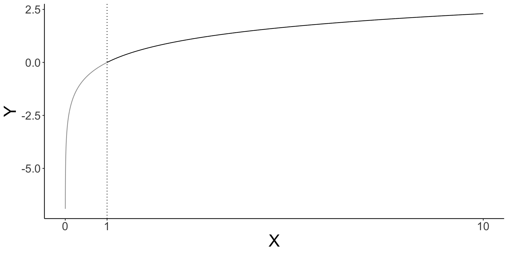
\[E\left(rX+s\right) = r E\left(X\right) +s,\]
where \(r\) and \(s\) are constants.
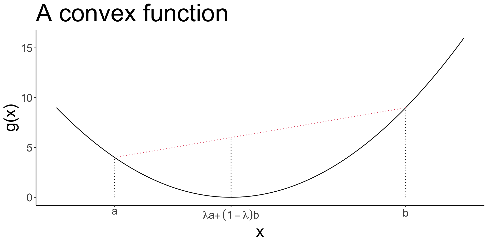
A function \(g\) is called convex if for every \(a<b\), the line segment from \((a, g(a))\) to \((b, g(b))\) is on or above the graph of \(g\) on the interval \((a, b)\).
In other words, for \(a<b\), and \(\lambda \in (0,1)\),
\[\lambda g(a) + (1-\lambda)g(b) \ge g\left(\lambda a + \left(1-\lambda\right)b\right)\]
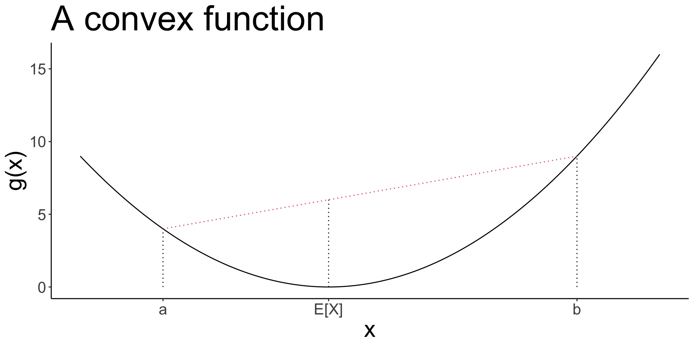
Let \(g\) be a convex function on interval \(I\), and let \(X\) be a random variable taking values from \(I\). Then Jensen’s inequality states that
\[g\left(E\left[X\right]\right) \le E\left[g\left(X\right)\right].\]
\[R=g\left(N\right)=\begin{cases}2N - 10 & \text{when } 0\le N < 10 \\ 4N - 30 &\text{when } B\ge 10\end{cases}\]
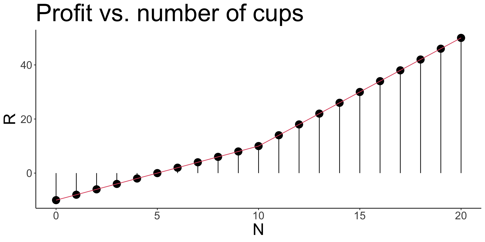
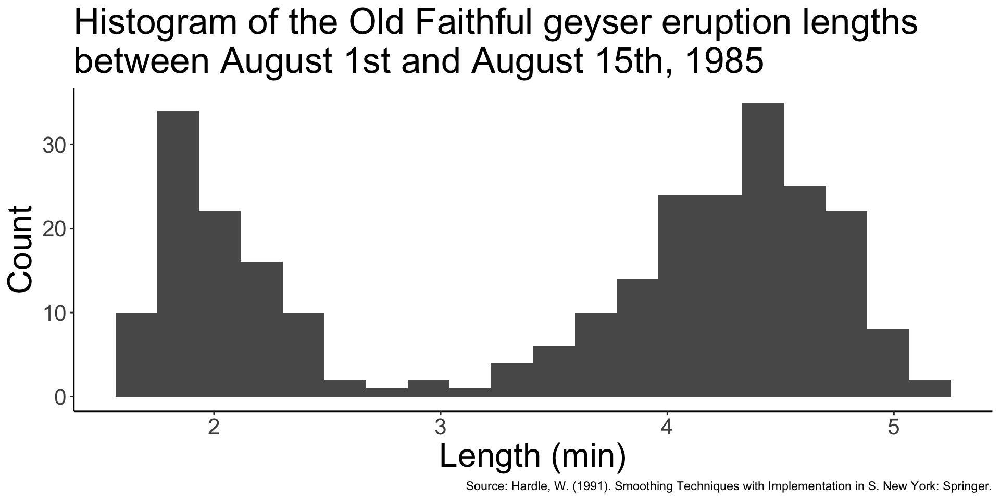
is a visual interpretation of data
provides a sense of the shape of the distribution
divides the range of values into small intervals called bins
counts the number of data falling into each bin
plots the bins on the x-axis and places vertical bars representing the counts with their heights for each bin
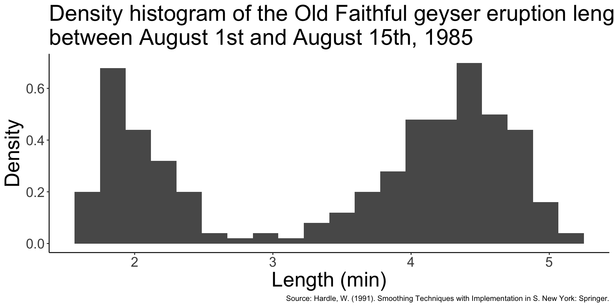
is a special type of histogram
adjusts the heights such that the area under the histogram equals to 1
achieves this by dividing the heights in a regular histogram by the length of the interval and the total count (See Section 5.4.3 on Evans & Rosenthal for details)
retains the shape while allowing comparison of the distribution with other data
(Upon completing the R Practice Worksheet)
© 2022. Michael J. Moon. University of Toronto.
Sharing, posting, selling, or using this material outside of your personal use in this course is NOT permitted under any circumstances.